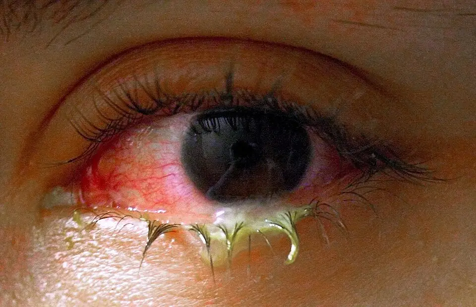

Yeux douloureux, rouges ou prurigineux ; écoulement oculaire — S1.17
DX.2 — Conjonctivite bactérienne aiguë
Ce diagnostic occupe le quatrième rang de fréquence de la Phase A et ne porte aucun rang d’exclusion urgente.
La conjonctivite bactérienne aiguë rougit la conjonctive et produit des sécrétions purulentes, sans douleur vraie ni baisse de visionS1S2. Le médecin exclut d’abord les drapeaux rouges, puis il réserve l’antibiotique à l’enfant et aux terrains à risqueS1. Il prescrit alors Azyter® ou Tobrex® selon l’AIPS (information professionnelle suisse), et il contrôle la réponse à 48 heuresAIPS 68519AIPS 44538S1.
Ce cours sur la conjonctivite bactérienne aiguë repose uniquement sur les sources citées, et aucun médecin ne l’a encore validé cliniquement.
1. Définition
Le College of Optometrists définit la conjonctivite bactérienne comme une infection de la conjonctive, marquée par l’apparition aiguë d’une rougeur, d’une gêne et d’un écoulement, à un œil ou aux deuxS2.
2. Épidémiologie (Suisse, puis Europe)
Les HUG (Hôpitaux universitaires de Genève) placent la conjonctivite aiguë au premier rang des infections oculaires rencontrées par le médecin de premier recoursS1. Chez l’adulte, la cause reste pourtant virale dans environ 80 % des cas, si bien que la forme bactérienne n’en forme qu’une minoritéS1. Chez l’enfant, en revanche, l’origine bactérienne devient majoritaire, surtout par Haemophilus influenzae et Staphylococcus aureusS1. La fenêtre chiffres utiles rassemble ces proportions avec leur population, leur année et leur source.
Chiffres utiles de la conjonctivite bactérienne
| Chiffre | Population | Année | Source |
|---|---|---|---|
| Origine virale dans environ 80 % des conjonctivites infectieuses | Adultes en médecine de premier recours, Genève | 2025 | S1 |
| Origine principalement bactérienne | Enfants | 2025 | S1 |
| Guérison spontanée de 60 % des conjonctivites infectieuses en 1 à 2 semaines | Adultes et enfants, toutes causes infectieuses | 2025 | S1 |
| Guérison clinique spontanée de 55,5 % (408 sur 735) entre les jours 4 et 9 | Bras placebo de 5 essais randomisés, 1474 participants | 2023 | S3 |
| Guérison clinique de 68,2 % (504 sur 739) sous antibiotique | Bras antibiotique des mêmes essais | 2023 | S3 |
| Résolution habituelle en 5 à 7 jours sans traitement | Conjonctivite bactérienne aiguë | 2025 | S2 |
| Retour au travail ou à l’école dès 24 à 48 heures d’antibiothérapie efficace | Conjonctivite bactérienne avérée | 2025 | S1 |
Le College of Optometrists observe la conjonctivite bactérienne plus souvent chez l’enfant et chez la personne âgée, et il souligne sa contagiosité familialeS2. Chez l’adulte, les HUG citent comme germes fréquents les staphylocoques, les streptocoques, Haemophilus, Moraxella et NeisseriaS1. Le gonocoque mérite une place à part, car le College l’a ajouté en 2025 comme cause menaçant la visionS2. La fenêtre germes et terrains associe chaque germe à son terrain et à sa conséquence pratique.
Germes et terrains de la conjonctivite bactérienne
| Germe | Terrain typique | Indice clinique | Conséquence pratique | Source |
|---|---|---|---|---|
| Haemophilus influenzae | Enfant | Sécrétions purulentes, âge inférieur à 12 ans | Antibiotique topique d’emblée chez l’enfant | S1 |
| Staphylococcus aureus | Enfant et adulte | Sécrétions purulentes au bord ciliaire | Collyre antibiotique selon les critères du point 11 | S1 |
| Streptocoques, Moraxella | Adulte | Tableau peu spécifique | Observation possible si la forme reste peu sévère | S1 |
| Neisseria gonorrhoeae | Adulte sexuellement actif | Sécrétions hyperpurulentes, installation rapide, douleurs importantes | Prélèvement, traitement systémique et avis ophtalmologique | S1S2 |
| Chlamydia trachomatis | Adulte avec symptômes urogénitaux | Évolution progressive sur plusieurs jours à semaines | Recherche par amplification génique et traitement systémique | S1 |
Les sources suisses et européennes ne recommandent pas toutes la même place pour l’antibiotique, ce qui explique les pratiques variables d’un cabinet à l’autreS1S2S3. La fenêtre positions des sources résume ces positions, de la Suisse vers l’Europe.
Positions des sources sur l’antibiotique
| Source | Origine | Position sur l’antibiotique | Argument avancé | Source |
|---|---|---|---|---|
| HUG, stratégie 2025 | Suisse | Observation possible pour la forme peu sévère de l’adulte ; antibiotique d’emblée chez l’enfant et sur terrain à risque | Guérison spontanée fréquente, origine bactérienne chez l’enfant | S1 |
| College of Optometrists, 2025 | Royaume-Uni | Antibiotique en collyre ou en pommade pour accélérer la guérison, bénéfice discuté | Patients de médecine générale moins sévères que ceux des cliniques ophtalmologiques | S2 |
| Revue Cochrane, 2023 | Internationale, surtout non européenne | Antibiotique envisageable pour une guérison plus rapide | Bénéfice modeste sans effet indésirable grave signalé | S3 |
| College of Optometrists, 2025 | Royaume-Uni | Avis le jour même pour le gonocoque suspecté | Potentiel menaçant pour la vision | S2 |
| HUG, stratégie 2025 | Suisse | Traitement systémique pour gonocoque et Chlamydia | Infection sexuellement transmise et partenaire à traiter | S1 |
Dans le lot S1.17, la conjonctivite bactérienne occupe le quatrième rang de fréquence ; ce rang reste déduit, car aucune prévalence suisse propre n’a été publiée dans les sources luesS1.
3. Physiopathologie
Par déduction physiopathologique, les bactéries envahissent la conjonctive, puis la réponse inflammatoire dilate ses vaisseaux, ce qui produit la rougeur diffuseS1. Les sécrétions purulentes ou mucopurulentes dominent ensuite le tableau bactérien, et elles s’accumulent au bord ciliaire inférieurS1. La conjonctive réagit alors par des papilles, tandis que la forme virale donne plutôt des folliculesS1. La fenêtre base à connaître montre ces signes sur une photographie annotée.
Base à connaître : la conjonctive infectée
Conjonctivite infectieuse avec sécrétions : Tanalai a publié cette photographie en couleurs sous licence CC BY 3.0 sur Wikimedia CommonsS4.

Le lecteur recherche d’abord sur le cliché brut la rougeur, les sécrétions des cils et la transparence de la cornée.
- L’hyperémie bulbaire diffuse, la plus marquée en nasal, traduit la vasodilatation des vaisseaux conjonctivaux.
- Le dépôt jaune collé aux cils inférieurs correspond aux sécrétions mucopurulentes, que les HUG décrivent au bord ciliaire inférieur.
- La cornée reste transparente, car l’iris et la pupille se lisent nettement à travers elle.
- La paupière supérieure paraît tuméfiée, ce qui rejoint l’œdème palpébral que les compresses froides soulagent.
- Le piège consiste à conclure sur ce seul aspect, puisque aucun signe isolé ne sépare l’origine bactérienne de l’origine virale.
La cornée reste intacte dans la forme simple, si bien que le patient décrit une gêne sans douleur vraie ni baisse de visionS2. Lorsque la douleur, la photophobie ou un trouble visuel apparaissent, l’infection a probablement gagné la cornée, et le diagnostic bascule vers la kératiteS1. Le gonocoque progresse très vite, car il produit une conjonctivite hyperpurulente capable de menacer la visionS1S2. La fenêtre corrélation mécanisme–signe–conduite relie chaque perturbation à son examen et à son traitement.
Corrélation : mécanisme, signe, examen et traitement
| Perturbation | Signe clinique | Examen qui la montre | Traitement qui la corrige | Source |
|---|---|---|---|---|
| Vasodilatation conjonctivale | Rougeur diffuse bulbaire et palpébrale | Inspection comparative des deux yeux | Rinçages au sérum physiologique, compresses froides | S1 |
| Exsudat purulent | Sécrétions purulentes au bord ciliaire | Analyse des sécrétions, éversion palpébrale | Collyre antibiotique si un critère d’indication existe | S1 |
| Réaction papillaire de la conjonctive | Aspect velouté de la conjonctive palpébrale | Éversion de la paupière inférieure et supérieure | Aucun traitement propre | S1 |
| Atteinte cornéenne secondaire | Douleur, photophobie, baisse visuelle | Lampe à fente chez l’ophtalmologue | Avis ophtalmologique en urgence | S1 |
| Infection gonococcique | Sécrétions hyperpurulentes, évolution rapide | Amplification génique ou culture du frottis conjonctival | Antibiothérapie systémique et avis spécialisé | S1S2 |
| Infection à Chlamydia | Conjonctivite traînante ou récidivante | Amplification génique urinaire ou conjonctivale | Doxycycline ou azithromycine orale | S1 |
4. Démarche diagnostique
Le médecin écarte d’abord les drapeaux rouges des HUG, puis il confirme l’atteinte conjonctivale, car une kératite, une uvéite ou une crise de fermeture de l’angle imposent l’ophtalmologueS1. Il oriente ensuite vers l’origine bactérienne, sans jamais conclure sur un signe isoléS1. Enfin, il recherche une infection sexuellement transmissible (IST) et pèse les critères d’antibiothérapie d’embléeS1. La fenêtre démarche en six étapes précise chaque question, l’élément décisif et la conduite.
Démarche diagnostique en six étapes
| Étape | Question | Élément décisif | Conduite | Source |
|---|---|---|---|---|
| 1 | Un drapeau rouge existe-t-il ? | Baisse visuelle, photophobie, douleur intense, lentilles, traumatisme, immunosuppression | Avis ophtalmologique en urgence | S1 |
| 2 | La rougeur reste-t-elle conjonctivale ? | Rougeur diffuse, cornée claire, pupille normale | Poursuite de la démarche de conjonctivite | S1 |
| 3 | L’origine paraît-elle bactérienne ? | Sécrétions purulentes, âge inférieur à 12 ans, absence de contage | Orientation bactérienne, jamais certitude | S1 |
| 4 | Une IST est-elle possible ? | Sécrétions hyperpurulentes, symptômes urogénitaux, récidive | Recherche de Chlamydia et de gonocoque, traitement systémique | S1 |
| 5 | Un critère d’antibiotique d’emblée existe-t-il ? | Enfant, immunodépression, lentilles, chirurgie oculaire récente, monophtalme | Collyre antibiotique ; recours spécialisé pour les quatre derniers | S1 |
| 6 | L’évolution confirme-t-elle le diagnostic ? | Absence de réponse après 48 heures de traitement | Avis ophtalmologique : le diagnostic est remis en cause | S1 |
Le diagnostic différentiel reprend les dix diagnostics de la Phase A, mais quatre d’entre eux seulement ressemblent vraiment à la conjonctivite bactérienneS1. La conjonctivite virale reste la confusion la plus fréquente, tandis que l’allergie se distingue par le prurit et la rhinite associéeS1. La fenêtre diagnostic différentiel compare ces entités avec le signe qui les sépare.
Diagnostic différentiel dans le lot
| Diagnostic | Ce qui ressemble | Ce qui sépare | Conduite | Source |
|---|---|---|---|---|
| DX.1 Conjonctivite virale non herpétique | Rougeur diffuse, sécrétions, contagiosité | Sécrétions séreuses, adénopathie préauriculaire, contage, infection des voies respiratoires | Soins de support sans antibiotique | S1 |
| DX.3 Conjonctivite allergique | Rougeur bilatérale | Prurit au premier plan, chémosis, terrain atopique | Éviction de l’allergène, collyre antihistaminique | S1 |
| DX.5 Blépharite | Paupières collées, rougeur du bord libre | Atteinte chronique du bord palpébral | Hygiène palpébrale ; antibiotique topique si composante infectieuse | S1 |
| DX.7 Kératite infectieuse 🚩 E2 | Œil rouge avec écoulement purulent | Douleur, photophobie, opacité cornéenne blanchâtre, lentilles | Ophtalmologue en urgence | S1 |
| DX.8 Uvéite antérieure aiguë 🚩 E3 | Œil rouge | Cercle périkératique, photophobie, absence de sécrétions | Ophtalmologue en urgence | S1 |
| DX.9 Crise aiguë de fermeture de l’angle 🚩 E1 | Œil rouge | Douleur intense, céphalée, halos, baisse visuelle | Urgence ophtalmologique immédiate | S1 |
5. Anamnèse ciblée et drapeaux rouges
L’anamnèse sert d’abord à exclure les drapeaux rouges, car le Tableau 2 des HUG impose un examen spécialisé en urgence dès qu’un seul est présentS1. Elle cherche ensuite les arguments bactériens, puis les indices d’une IST, que le médecin interroge sans gêne ni jugementS1. La fenêtre questions ciblées précise la réponse évocatrice et son interprétation.
Questions ciblées et interprétation
| Question | Réponse évocatrice | Interprétation | Source |
|---|---|---|---|
| Les paupières sont-elles collées au réveil ? | Oui, par des sécrétions jaunes | Sécrétions purulentes en faveur de l’origine bactérienne | S1 |
| Ressentez-vous une brûlure ou un corps étranger ? | Brûlure marquée | Plutôt viral selon le Tableau 3 des HUG | S1 |
| Avez-vous eu un rhume ou des troubles digestifs récents ? | Oui | Plutôt viral | S1 |
| Quelqu’un de votre entourage a-t-il un œil rouge ? | Oui | Notion de contage, plutôt virale | S1 |
| Portez-vous des lentilles de contact ? | Oui | Drapeau rouge : risque de kératite, avis ophtalmologique en urgence | S1 |
| Avez-vous des brûlures urinaires ou un écoulement génital ? | Oui | Conjonctivite à gonocoque ou à Chlamydia à rechercher | S1 |
| Votre vision a-t-elle baissé, la lumière vous gêne-t-elle ? | Oui | Drapeau rouge : atteinte cornéenne ou intraoculaire | S1 |
| Avez-vous déjà reçu un traitement pour cet œil ? | Oui, sans effet après 48 heures | Drapeau rouge : échec thérapeutique | S1 |
Plusieurs terrains transforment une conjonctivite banale en urgence, notamment le patient monophtalme, immunosupprimé ou récemment opéré de l’œilS1. Un patient qui ne peut décrire sa plainte, comme le petit enfant ou le patient confus, justifie aussi un avis ophtalmologique urgentS1. Chez le diabétique, la douleur peut manquer, si bien que son absence ne rassure pasS1. La fenêtre drapeaux rouges associe chaque signe à la conduite attendue.
Drapeaux rouges et conduite
| Drapeau rouge | Diagnostic à craindre | Conduite | Source |
|---|---|---|---|
| Baisse de la vision, diplopie, anisocorie nouvelle | Atteinte cornéenne, uvéite, fermeture de l’angle, atteinte neurologique | Examen spécialisé en urgence | S1 |
| Photophobie, douleur oculaire intense | Kératite, uvéite | Examen spécialisé en urgence | S1 |
| Halos, douleur oculaire avec céphalée | Crise de fermeture de l’angle | Urgence ophtalmologique immédiate, aucun mydriatique | S1 |
| Port de lentilles de contact | Kératite infectieuse | Retrait des lentilles, conservation dans l’étui pour la bactériologie, ophtalmologue en urgence | S1 |
| Symptômes urogénitaux, conjonctivite récidivante | Gonocoque, Chlamydia | Prélèvements, traitement systémique du patient et du partenaire | S1 |
| Absence de réponse après 48 heures | Diagnostic erroné ou germe résistant | Avis ophtalmologique | S1 |
| Zona de la première branche du trijumeau | Atteinte oculaire zostérienne | Avis ophtalmologique en urgence | S1 |
| Patient monophtalme ou immunosupprimé | Perte fonctionnelle grave | Antibiotique et recours au spécialiste | S1 |
6. Examen physique ciblé, région par région
Les HUG demandent un examen systématisé et comparatif, avec inspection bilatérale, éversion palpébrale, analyse des sécrétions et examen neurologiqueS1. Sans lampe à fente, cet examen reste limité, et la palpation du tonus oculaire ne doit pas servir, car elle manque de fiabilitéS1. Chaque région figure dans sa propre fenêtre : vision et état général, paupières et sécrétions, conjonctive, cornée et pupille et ganglions et sphère urogénitale.
Région 1 : vision et état général
| Geste | Attendu dans la conjonctivite bactérienne | Anomalie qui alerte | Interprétation et conduite | Source |
|---|---|---|---|---|
| Appréciation de l’état général | Bon état général | Patient septique, confus ou non communicant | Avis ophtalmologique en urgence | S1 |
| Acuité visuelle comparée | Vision conservée, flou corrigé par le clignement | Baisse persistante de la vision | Drapeau rouge : examen spécialisé en urgence | S1 |
| Champ visuel au doigt | Normal | Déficit du champ | Atteinte neurologique ou rétinienne à adresser | S1 |
Région 2 : paupières, cils et sécrétions
| Geste | Attendu dans la conjonctivite bactérienne | Anomalie qui alerte | Interprétation et conduite | Source |
|---|---|---|---|---|
| Inspection des paupières | Œdème palpébral modéré | Vésicules palpébrales unilatérales | Conjonctivite herpétique évoquée | S1 |
| Analyse des sécrétions | Sécrétions purulentes, cils collés | Sécrétions hyperpurulentes et abondantes | Gonocoque à rechercher en urgence | S1 |
| Éversion palpébrale | Conjonctive tarsale rouge | Corps étranger sous la paupière | Érosion ou corps étranger à traiter selon le cas | S1 |
Région 3 : conjonctive
| Geste | Attendu dans la conjonctivite bactérienne | Anomalie qui alerte | Interprétation et conduite | Source |
|---|---|---|---|---|
| Inspection bulbaire | Hyperémie diffuse | Rougeur localisée en secteur | Épisclérite ou sclérite à évoquer | S1 |
| Aspect de la conjonctive tarsale | Papilles | Follicules, hémorragies conjonctivales | Origine virale plus probable | S1 |
| Recherche d’un chémosis | Absent ou discret | Chémosis marqué avec prurit | Conjonctivite allergique plus probable | S1 |
Région 4 : cornée et pupille
| Geste | Attendu dans la conjonctivite bactérienne | Anomalie qui alerte | Interprétation et conduite | Source |
|---|---|---|---|---|
| Transparence de la cornée à la lumière | Cornée claire | Opacité ou tache blanchâtre | Kératite : ophtalmologue en urgence | S1 |
| Recherche d’un cercle périkératique | Absent | Rougeur périlimbique | Kératite ou uvéite à adresser | S1 |
| Réflexe pupillaire et taille des pupilles | Pupilles égales et réactives | Anisocorie nouvelle, pupille aréactive | Drapeau rouge : urgence spécialisée | S1 |
| Recherche d’un hypopion | Absent | Niveau blanchâtre dans la chambre antérieure | Consultation ophtalmologique en urgence | S1 |
Région 5 : ganglions et sphère urogénitale
| Geste | Attendu dans la conjonctivite bactérienne | Anomalie qui alerte | Interprétation et conduite | Source |
|---|---|---|---|---|
| Palpation préauriculaire | Pas d’adénopathie, rare dans l’origine bactérienne | Adénopathie préauriculaire | Origine virale plus probable | S1 |
| Recherche de symptômes urogénitaux | Absents | Écoulement génital, brûlures mictionnelles | Prélèvement urinaire ou conjonctival pour Chlamydia et gonocoque | S1 |
7. Approche syndromique
Le syndrome à reconnaître associe un œil rouge, des sécrétions et une vision conservée, sans douleur vraie ni photophobieS1S2. Dans ce syndrome, le médecin doit encore séparer quatre conjonctivites, que le Tableau 4 des HUG compare sur huit critèresS1. La fenêtre comparaison des conjonctivites rassemble ces critères et situe la forme bactérienne parmi ses voisines.
Comparaison des quatre conjonctivites selon les HUG
| Critère | Virale non herpétique | Bactérienne | Gonocoque ou Chlamydia | Allergique | Source |
|---|---|---|---|---|---|
| Contexte | Épidémique, infection respiratoire récente | Enfant, parfois terrain à risque | Anamnèse sexuelle, symptômes urogénitaux | Exposition à un allergène, atopie, rhinite | S1 |
| Installation | Unilatérale, puis bilatérale en 2 à 3 jours | Rapide, souvent unilatérale puis bilatérale | Gonocoque rapide ; Chlamydia sur jours à semaines | Progressive, par poussées | S1 |
| Symptômes | Brûlure, corps étranger, picotements | Gêne légère à modérée | Douleurs importantes pour le gonocoque | Prurit et larmoiement au premier plan | S1 |
| Sécrétions | Claires | Purulentes ou mucopurulentes, abondantes | Souvent hyperpurulentes | Claires | S1 |
| Conjonctive | Follicules, hémorragies | Papilles | Papilles | Papilles, pavage conjonctival | S1 |
| Adénopathie préauriculaire | Fréquente | Rare | Rare | Absente | S1 |
| Évolution | Autolimitée en 2 à 3 semaines | Autolimitée en 5 à 8 jours | Rapide vers la forme hyperpurulente | Chronique, saisonnière ou perannuelle | S1 |
| Examens | Inutiles sans gravité | Inutiles sans gravité | Amplification génique ou culture urinaire, prélèvement conjonctival | Inutiles sans gravité | S1 |
8. Diagnostic positif et critères
Le diagnostic reste clinique dans la majorité des cas, mais aucun signe ni symptôme unique ne sépare l’origine bactérienne de l’origine viraleS1. Le médecin additionne donc des arguments d’orientation, puis il vérifie qu’aucun drapeau rouge ne contredit le diagnosticS1. La fenêtre critères d’orientation hiérarchise ces arguments selon le Tableau 3 des HUGS1.
Critères d’orientation vers l’origine bactérienne
| Élément | Plutôt bactérien | Plutôt viral | Poids pour la décision | Source |
|---|---|---|---|---|
| Âge inférieur à 12 ans | Fréquent | Rare | Fort argument bactérien chez l’enfant | S1 |
| Âge supérieur à 12 ans | Rare | Fréquent | Origine virale probable chez l’adulte | S1 |
| Sécrétions purulentes | Marquées | Absentes | Argument majeur d’orientation | S1 |
| Sécrétions séromuqueuses | Absentes | Abondantes | Argument contre l’origine bactérienne | S1 |
| Brûlure, corps étranger | Rares | Fréquents | Argument viral | S1 |
| Adénopathie préauriculaire | Rare | Fréquente | Argument viral | S1 |
| Hémorragies conjonctivales | Rares | Fréquentes | Argument viral | S1 |
| Contage, infection respiratoire ou digestive associée | Rares | Fréquents | Argument viral | S1 |
Le diagnostic positif retient donc une rougeur conjonctivale avec sécrétions purulentes, une cornée claire et l’absence de drapeau rougeS1. L’évolution sous traitement le confirme ensuite, puisque l’AIPS d’Azyter® demande de reconsidérer le diagnostic sans amélioration après 3 joursAIPS 68519.
9. Examens complémentaires
Les examens bactériologiques et virologiques ne servent pas dans la forme simple, car le diagnostic repose sur la cliniqueS1. Les HUG les réservent à trois situations : suspicion d’IST, persistance malgré l’antibiotique et conjonctivite particulièrement sévère, qui relève alors du spécialisteS1. La fenêtre examens ciblés précise pour chacun l’indication, l’interprétation et la conduite.
Examens ciblés selon les HUG
| Examen | Indication | Résultat et interprétation | Conduite | Source |
|---|---|---|---|---|
| Aucun examen | Conjonctivite sans critère de gravité | Sans objet | Traitement selon le point 11 | S1 |
| Amplification génique (PCR) ou culture urinaire pour Chlamydia et gonocoque | Conjonctivite récidivante ou avec symptômes urogénitaux | Positif : IST confirmée | Traitement systémique du patient et du partenaire | S1 |
| PCR sur frottis conjonctival | Conjonctivite hyperpurulente, suspicion d’IST | Positif : germe identifié | Traitement systémique, ophtalmologue dès le lendemain matin | S1 |
| Culture des sécrétions | Persistance malgré l’antibiotique ou forme très sévère | Germe et sensibilité | Adresser au spécialiste | S1 |
| Analyse bactériologique des lentilles et de l’étui | Porteur de lentilles | Germe de la kératite | Ophtalmologue en urgence | S1 |
La revue Cochrane de 2023 chiffre le bénéfice attendu d’un collyre antibiotique, ce qui aide à interpréter l’évolution observée au contrôleS3. Sous placebo, 55,5 % des patients guérissent cliniquement entre les jours 4 et 9, contre 68,2 % sous antibiotiqueS3. La fenêtre interprétation chiffrée résume ces effets et leur degré de certitude.
Interprétation chiffrée de l’antibiothérapie topique
| Critère de jugement | Effet de l’antibiotique contre placebo | Certitude | Lecture clinique | Source |
|---|---|---|---|---|
| Guérison clinique (5 essais, 1474 participants) | Risque relatif 1,26 ; amélioration de 26 % | Modérée | Bénéfice modeste, car plus de la moitié guérit sans traitement | S3 |
| Guérison microbiologique (10 essais, 2827 participants) | Risque relatif 1,53 | Non précisée dans le résumé | Éradication plus fréquente du germe | S3 |
| Infection clinique persistante (19 essais, 5280 participants) | Risque relatif 0,73 ; 27 % de moins | Modérée | Moins d’échecs sous antibiotique | S3 |
| Arrêt prématuré du traitement (13 essais, 5573 participants) | Risque relatif 0,64 | Modérée | Meilleure adhésion sous antibiotique | S3 |
| Effets indésirables systémiques graves | Aucun signalé | Très faible | Collyre sûr sur le plan général | S3 |
| Classe d’antibiotique et durée | Aucune différence entre sous-groupes | Non précisée | Le choix suit l’AIPS et la tolérance | S3 |
10. Arbre décisionnel
L’arbre suivant ordonne la décision des situations graves vers les situations simples, à partir de l’algorithme et du texte des HUGS1. La fenêtre arbre décisionnel contient les embranchements dans l’ordre où le médecin les franchit.
Arbre décisionnel de la conjonctivite bactérienne
- Si un drapeau rouge existe, comme une baisse visuelle, une photophobie, des lentilles ou un traumatisme, le médecin adresse en urgence à l’ophtalmologueS1.
- Sinon, si la cornée paraît opaque ou si un hypopion apparaît, il adresse aussi en urgence, car il s’agit d’une kératite ou d’une uvéiteS1.
- Sinon, si les sécrétions sont hyperpurulentes ou si des symptômes urogénitaux existent, il prélève, traite par voie systémique et oriente vers les urgences ophtalmologiques le lendemain matinS1.
- Sinon, si le patient est un enfant, il prescrit d’emblée un collyre antibiotique, en favorisant Azyter® avant 2 ansS1.
- Sinon, si l’adulte est immunodéprimé, monophtalme ou récemment opéré, il prescrit un antibiotique et organise le recours au spécialisteS1.
- Sinon, pour une forme bactérienne peu sévère de l’adulte, il peut proposer une observation avec soins de support, sans antibiotique d’embléeS1.
- Enfin, si aucune amélioration n’apparaît après 48 heures de traitement, il demande un avis ophtalmologiqueS1.
11. Prise en charge selon les recommandations suisses
11.A But
Le traitement vise une guérison rapide, la protection de la cornée et l’arrêt de la transmission, car l’infection reste contagieuse pour l’entourageS1S2. Il vise aussi à ne pas manquer une IST ni une kératite, deux situations qui menacent la vision ou le partenaireS1.
11.B Moyens
Les soins de support forment la base, avec rinçages au sérum physiologique, larmes artificielles, compresses froides et lavage répété des mainsS1. Plusieurs auteurs proposent d’observer sans antibiotique une conjonctivite bactérienne peu sévère de l’adulte, puisque la majorité guérit seuleS1. L’antibiothérapie topique s’impose en revanche chez l’enfant, et chez l’adulte immunodéprimé, porteur de lentilles, récemment opéré ou monophtalmeS1. La prescription de corticoïdes topiques par le médecin de premier recours est à bannir, car ils aggravent une infection virale, notamment herpétiqueS1.
La fenêtre traitement structuré donne pour chaque molécule la dose AIPS, la durée, le contrôle et le critère d’échec. La fenêtre situations particulières adapte ensuite la conduite à l’enfant, à la grossesse, à l’allaitement et aux lentilles.
Traitement structuré de la conjonctivite bactérienne
| Molécule ® | Dose AIPS | Durée | Contrôle | Critère d’échec et conduite | Source |
|---|---|---|---|---|---|
| Azithromycine, Azyter® collyre unidose | « Instiller 1 goutte dans le cul-de-sac conjonctival 2 fois par jour, matin et soir, pendant 3 jours »AIPS 68519 | 3 jours, sans prolongation selon l’AIPSAIPS 68519 | Amélioration attendue en 3 joursAIPS 68519 | Sans amélioration après 3 jours, le diagnostic est reconsidéréAIPS 68519 ; après 48 heures sans réponse, avis ophtalmologiqueS1 | AIPS 68519S1 |
| Tobramycine, Tobrex® collyre | Infection légère à modérée : « 1 à 2 gouttes toutes les 4 heures »AIPS 44538 | 1 semaine selon les HUG, qui proposent 1 goutte 4 fois par jourS1 | Contrôle si aucune amélioration en 48 heures | Échec à 48 heures : avis ophtalmologiqueS1 ; éviter le traitement prolongé, qui sélectionne des germes résistantsAIPS 44538 | AIPS 44538S1 |
| Hyaluronate de sodium, Lacrycon® (soin de support) | « instiller 1 goutte 4 fois par jour dans le sac conjonctival »AIPS 53674 | Pendant les symptômes | Confort oculaire | Aucun effet antibactérien : il ne remplace pas l’antibiotique indiqué | AIPS 53674S1 |
| Sérum physiologique 0,9 % en ampoules | Rinçages 3 fois par jour selon les HUG, hors AIPSS1 | Pendant les sécrétions | Disparition des sécrétions | Sécrétions qui persistent : réévaluer | S1 |
| Hexamidine, Désomédine® | Antiseptique proposé par les HUG, hors AIPS dans le corpus consulté, sans dose reprise iciS1 | Selon les HUG | Évolution clinique | Échec : avis spécialisé | S1 |
| Doxycycline, Doxycyclin-Mepha® (Chlamydia) | « 100 mg de doxycycline par voie orale deux fois par jour pendant 7 jours »AIPS 65952 | 7 joursAIPS 65952 | Contrôle par l’ophtalmologue | Traitement du partenaire en cas de culture positiveS1 | AIPS 65952S1 |
| Azithromycine orale, Azithromycine Sandoz® (Chlamydia) | « une dose unique de 1000 mg d’azithromycine par voie orale »AIPS 57482 | Dose unique | Contrôle par l’ophtalmologue | Choix en cas de grossesse plutôt que la doxycycline, selon l’AIPS de la doxycyclineAIPS 65952 | AIPS 57482AIPS 65952 |
| Ceftriaxone, Rocephin® (gonocoque) | Les HUG recommandent 1 g par voie intramusculaire, alors que l’AIPS prévoit pour la blennorragie l’« administration unique de 0,25 g de Rocephin »AIPS 44625S1 | Dose unique, associée à l’azithromycine ou à la doxycycline selon les HUG | Urgences ophtalmologiques le lendemain matin | Exclure une contre-indication à la lidocaïne du solvant intramusculaireAIPS 44625 | AIPS 44625S1 |
Situations particulières
| Situation | Conduite | Justification | Source |
|---|---|---|---|
| Enfant | Antibiotique topique d’emblée ; Azyter® favorisé avant 2 ans | Origine majoritairement bactérienne | S1 |
| Enfant avant 2 mois | Tobrex® non recommandé | « L’expérience documentée chez les nourrissons de moins de 2 mois est limitée »AIPS 44538 | AIPS 44538 |
| Porteur de lentilles | Retrait des lentilles et ophtalmologue en urgence | « Les patients atteints de conjonctivite bactérienne ne doivent pas porter de lentilles de contact »AIPS 68519 | AIPS 68519S1 |
| Grossesse, collyre | Azyter® utilisable | « Azyter peut être utilisé pendant la grossesse »AIPS 68519 | AIPS 68519 |
| Allaitement, collyre | Azyter® compatible | « En conséquence, l’allaitement est possible pendant le traitement »AIPS 68519 | AIPS 68519 |
| Grossesse, Chlamydia | Azithromycine orale plutôt que doxycycline | « La doxycycline ne doit pas être administrée pendant la grossesse, sauf nécessité absolue »AIPS 65952 | AIPS 65952 |
| Sujet âgé | Aucune adaptation d’Azyter® | « Sujets âgés: Aucune adaptation posologique n’est nécessaire »AIPS 68519 | AIPS 68519 |
| Patient sous corticoïde topique prescrit hors avis spécialisé | Arrêt et avis ophtalmologique | Le corticoïde topique reste le domaine du spécialiste | S1 |
Le choix entre les deux collyres de première intention dépend surtout de l’âge, du rythme d’instillation possible et de la toléranceS1. La fenêtre Azyter® ou Tobrex® montre ces deux options point par point.
Azyter® ou Tobrex® : comparaison
| Critère | Azyter® (azithromycine) | Tobrex® (tobramycine) | Source |
|---|---|---|---|
| Rythme | 2 gouttes par jour, matin et soirAIPS 68519 | 1 à 2 gouttes toutes les 4 heures selon l’AIPSAIPS 44538 | AIPS 68519AIPS 44538 |
| Durée | 3 joursAIPS 68519 | 1 semaine selon les HUGS1 | AIPS 68519S1 |
| Âge | Favorisé chez l’enfant de moins de 2 ans par les HUG | Non recommandé avant 2 moisAIPS 44538 | S1AIPS 44538 |
| Tolérance | Sensation de brûlure possible, signalée par les HUG | Allergie croisée avec les autres aminosidesAIPS 44538 | S1AIPS 44538 |
| Grossesse | UtilisableAIPS 68519 | Données insuffisantesAIPS 44538 | AIPS 68519AIPS 44538 |
| Allaitement | PossibleAIPS 68519 | Risque non exclu pour le nourrissonAIPS 44538 | AIPS 68519AIPS 44538 |
| Adhésion | Schéma court et simple | Schéma plus long et plus fréquent | AIPS 68519S1 |
La conduite change ensuite selon le profil du patient, et la fenêtre conduite selon le profil réunit l’antibiotique, les soins, le suivi et le recours pour chaque cas.
Conduite selon le profil du patient
| Profil | Antibiotique | Soins de support | Suivi | Recours | Source |
|---|---|---|---|---|---|
| Adulte, forme peu sévère, sans critère | Observation possible sans antibiotique d’emblée | Rinçages, larmes artificielles, compresses froides | Réévaluation si aucune amélioration en 48 heures | Ophtalmologue en cas d’échec | S1 |
| Enfant | Antibiotique topique d’emblée | Rinçages et hygiène des mains | Retour à l’école dès 24 à 48 heures de traitement efficace | Ophtalmologue en cas d’échec | S1 |
| Enfant de moins de 2 ans | Azyter® favorisé | Rinçages | Contrôle clinique rapproché | Avis urgent si l’enfant ne peut décrire sa plainte | S1 |
| Adulte immunodéprimé, monophtalme ou récemment opéré | Antibiotique topique d’emblée | Rinçages | Contrôle par le spécialiste | Recours spécialisé systématique | S1 |
| Porteur de lentilles | Choix laissé à l’ophtalmologue | Retrait des lentilles | Ophtalmologue en urgence | Lentilles et étui gardés pour la bactériologie | S1 |
| Suspicion d’IST | Traitement systémique | Rinçages | Résultat des prélèvements | Urgences ophtalmologiques le lendemain matin | S1 |
| Échec après 48 heures | Pas de changement à l’aveugle | Poursuite des soins | Culture si la forme est sévère | Avis ophtalmologique | S1 |
Les HUG classent la ciprofloxacine, l’ofloxacine et la moxifloxacine parmi les collyres à éviter en premier recours, car leur usage se réserve aux infections graves ou aux porteurs de lentillesS1. L’AIPS de Ciloxan® couvre pourtant la conjonctivite bactérienne, mais ce choix reste celui de l’ophtalmologue dans ce coursAIPS 51898S1.
Chaque molécule figure dans une monographie : Azyter®, Tobrex®, Lacrycon®, Doxycyclin-Mepha®, Azithromycine Sandoz® et Rocephin®.
Monographie — azithromycine collyre (Azyter®)
| Indication AIPS | Le traitement local antibactérien des conjonctivites dues à des germes sensiblesAIPS 68519. |
|---|---|
| Dose AIPS | « Instiller 1 goutte dans le cul-de-sac conjonctival 2 fois par jour, matin et soir, pendant 3 jours »AIPS 68519. |
| Durée | « Il n’est pas nécessaire de prolonger le traitement au-delà de 3 jours »AIPS 68519. |
| Contre-indications | « Hypersensibilité à la substance active (azithromycine), à un autre macrolide ou à l’un des excipients »AIPS 68519. |
| Grossesse | « Azyter peut être utilisé pendant la grossesse »AIPS 68519. |
| Allaitement | « En conséquence, l’allaitement est possible pendant le traitement »AIPS 68519. |
| Contrôle | « En l’absence de signe d’amélioration après 3 jours, il faut reconsidérer le diagnostic »AIPS 68519. |
Monographie — tobramycine (Tobrex®)
| Dose AIPS | Collyre, infection légère à modérée : « instiller dans le sac conjonctival de l’œil atteint 1 à 2 gouttes toutes les 4 heures »AIPS 44538. |
|---|---|
| Forme grave | L’AIPS prévoit 2 gouttes chaque heure jusqu’à l’amélioration, ce qui relève du spécialisteAIPS 44538. |
| Enfant | « Des études cliniques ont montré qu’aucun ajustement posologique n’est nécessaire chez les enfants dès 2 mois »AIPS 44538. |
| Contre-indications | « Hypersensibilité connue à d’autres aminoglycosides administrés par voie topique ou systémique »AIPS 44538, en plus de l’hypersensibilité à la substance activeAIPS 44538. |
| Grossesse | « Il n’existe pas de données suffisantes concernant l’emploi chez la femme enceinte »AIPS 44538. |
| Allaitement | « un risque pour le nourrisson ne peut donc pas être exclu »AIPS 44538 ; il faut alors choisir entre l’arrêt de l’allaitement et l’arrêt du médicamentAIPS 44538. |
Monographie — hyaluronate de sodium (Lacrycon®)
| Indication AIPS | Le traitement symptomatique de la sécheresse oculaire ; les HUG l’emploient comme larme artificielle de supportAIPS 53674S1. |
|---|---|
| Dose AIPS | « Sauf indication contraire, instiller 1 goutte 4 fois par jour dans le sac conjonctival »AIPS 53674. |
| Contre-indications | « Hypersensibilité au principe actif ou à l’un des excipients de la composition »AIPS 53674. |
| Grossesse | « Le gel ophtalmique Lacrycon doit donc être utilisé avec précaution pendant la grossesse »AIPS 53674. |
| Allaitement | L’AIPS juge improbable le passage des composants dans le lait maternelAIPS 53674. |
Monographie — doxycycline (Doxycyclin-Mepha®)
| Usage dans ce cours | Conjonctivite à Chlamydia, selon les HUGS1. |
|---|---|
| Dose AIPS | « 100 mg de doxycycline par voie orale deux fois par jour pendant 7 jours »AIPS 65952. |
| Contre-indications | L’AIPS cite l’hypersensibilité aux tétracyclines et les « troubles sévères de la fonction hépatique »AIPS 65952. |
| Grossesse | « La doxycycline ne doit pas être administrée pendant la grossesse, sauf nécessité absolue »AIPS 65952. |
| Allaitement | « la doxycycline ne doit pas être administrée à la femme qui allaite »AIPS 65952 ; « Si l’administration de Doxycyclin-Mepha est nécessaire, l’allaitement doit être arrêté »AIPS 65952. |
Monographie — azithromycine orale (Azithromycine Sandoz®)
| Usage dans ce cours | Conjonctivite à Chlamydia ou association au traitement du gonocoque, selon les HUGS1. |
|---|---|
| Dose AIPS | « une dose unique de 1000 mg d’azithromycine par voie orale »AIPS 57482. |
| Contre-indications | L’hypersensibilité connue « à l’azithromycine, à l’érythromycine, à d’autres antibiotiques macrolides ou kétolides »AIPS 57482. |
| Grossesse | « L’azythromycine ne doit être utilisée pendant la grossesse qu’en cas de nécessité clinique et si les bénéfices attendus du traitement l’emportent sur les risques potentiels. »AIPS 57482 |
| Allaitement | « Pour cette raison, l’azithromycine ne doit pas être utilisée chez la femme qui allaite »AIPS 57482. « Si un traitement est indispensable, l’allaitement sera interrompu »AIPS 57482. |
Monographie — ceftriaxone (Rocephin®)
| Usage dans ce cours | Conjonctivite à gonocoque, en dose unique intramusculaire selon les HUGS1. |
|---|---|
| Dose AIPS | Pour la blennorragie, l’AIPS prévoit l’« administration unique de 0,25 g de Rocephin »AIPS 44625. |
| Contre-indications | « D’éventuelles contre-indications à la lidocaïne doivent par conséquent être exclues avant toute injection i.m. de ceftriaxone »AIPS 44625. |
| Grossesse | « une injection i.m. de ceftriaxone ne devrait pas être administrée pendant la grossesse (particulièrement durant les trois premiers mois) »AIPS 44625. |
| Allaitement | « la préparation ne doit pas être utilisée durant la période d’allaitement »AIPS 44625 ; l’AIPS demande d’interrompre l’allaitement si le traitement s’imposeAIPS 44625. |
11.C Surveillance
La surveillance porte sur la réponse clinique à 48 heures, puis sur la disparition des sécrétions, car l’échec signale un diagnostic erroné ou une complicationS1. La fenêtre calendrier de surveillance fixe le moment, le paramètre, le seuil et la conduite.
Calendrier de surveillance
| Moment | Paramètre | Seuil d’alerte | Conduite | Source |
|---|---|---|---|---|
| Dès la consultation | Vision, douleur, photophobie, cornée | Tout drapeau rouge | Ophtalmologue en urgence | S1 |
| 24 à 48 heures d’antibiotique efficace | Contagiosité | Sécrétions qui diminuent | Retour au travail ou à l’école autorisé | S1 |
| 48 heures | Réponse au traitement | Aucune amélioration | Avis ophtalmologique | S1 |
| 3e jour sous Azyter® | Signes d’amélioration | Absence d’amélioration | Reconsidérer le diagnostic | AIPS 68519 |
| Jours 4 à 9 | Guérison clinique | Persistance des signes | Réévaluation, culture et spécialiste si la forme est sévère | S1S3 |
| Après une IST confirmée | Partenaire | Culture positive | Traitement du partenaire | S1 |
11.D Pronostic
Le pronostic de la forme simple reste excellent, puisque le College of Optometrists décrit une résolution fréquente en 5 à 7 jours sans traitementS2. L’antibiotique raccourcit surtout l’évolution, ce qui compte pour le retour au travail, à l’école et à la qualité de vieS3. La conjonctivite gonococcique fait exception, car son potentiel menace la vision et justifie un avis le jour même selon le CollegeS2.
12. Prévention
La prévention repose sur le lavage répété des mains, qui limite la transmission à l’entourage et au personnel soignantS1. Le College conseille aussi de ne pas partager les serviettes, car la contagion familiale reste fréquenteS2. Le porteur de lentilles doit les retirer pendant l’infection, comme l’impose l’AIPS d’Azyter®AIPS 68519. En cas d’IST, le traitement du partenaire après culture positive prévient la réinfection et la transmissionS1.
La fenêtre mesures de prévention associe chaque mesure à sa cible et à sa justification.
Mesures de prévention
| Mesure | Cible | Justification | Source |
|---|---|---|---|
| Lavage répété des mains | Patient, famille, soignants | Limiter la transmission et l’auto-contamination | S1 |
| Serviettes non partagées | Famille | Contagion familiale fréquente | S2 |
| Retrait des lentilles pendant l’infection | Porteur de lentilles | Interdiction écrite dans l’AIPS d’Azyter® | AIPS 68519 |
| Retour différé au travail ou à l’école | Patient | Contagiosité jusqu’à 24 à 48 heures de traitement efficace | S1 |
| Traitement du partenaire | Partenaire sexuel | Culture positive à gonocoque ou à Chlamydia | S1 |
| Aucun corticoïde topique sans avis spécialisé | Médecin de premier recours | Risque d’aggraver une infection herpétique méconnue | S1 |
13. Points clés
- Chez l’adulte, la conjonctivite infectieuse est surtout virale, alors que chez l’enfant elle est surtout bactérienneS1.
- Aucun signe isolé ne prouve l’origine bactérienne, mais des sécrétions purulentes et un âge inférieur à 12 ans l’oriententS1.
- Un seul drapeau rouge, comme des lentilles, une photophobie ou une baisse visuelle, impose l’ophtalmologue en urgenceS1.
- Les examens ne servent qu’en cas de suspicion d’IST, d’échec thérapeutique ou de forme sévèreS1.
- Azyter® se prescrit 2 fois par jour pendant 3 jours, et Tobrex® 1 goutte 4 fois par jour pendant 1 semaine selon les HUGAIPS 68519S1.
- Le médecin de premier recours ne prescrit jamais de corticoïde topique, car il aggrave l’infection herpétiqueS1.
- Une conjonctivite hyperpurulente ou récidivante fait rechercher le gonocoque et Chlamydia, puis traiter par voie systémiqueS1.
- Le patient reprend le travail ou l’école dès 24 à 48 heures d’antibiothérapie efficaceS1.
14. Pièges et questions fréquentes à l’examen fédéral suisse
Chaque piège se présente comme une question d’examen, et sa réponse renvoie au point qui l’établit.
| Question | Réponse | Point | Source |
|---|---|---|---|
| Un adulte a un œil rouge avec sécrétions : faut-il un antibiotique d’emblée ? | Non, sauf critère : immunodépression, lentilles, chirurgie récente ou œil unique. | 11 | S1 |
| Un enfant de 4 ans a les paupières collées de pus : quelle conduite ? | Collyre antibiotique d’emblée, car l’origine est surtout bactérienne. | 11 | S1 |
| Un porteur de lentilles a une conjonctivite purulente : que faire des lentilles ? | Il les retire, les garde dans l’étui et consulte l’ophtalmologue en urgence. | 5 | S1 |
| Faut-il prescrire un collyre associant antibiotique et corticoïde ? | Non, le corticoïde topique reste le domaine du spécialiste. | 11 | S1 |
| Une conjonctivite hyperpurulente survient avec un écoulement urétral : quel diagnostic craindre ? | Une conjonctivite à gonocoque, à traiter par voie systémique. | 9 | S1 |
| Combien de temps dure Azyter® ? | Trois jours, sans prolongation même si des signes résiduels persistent. | 11 | AIPS 68519 |
| Que faire sans amélioration après 48 heures ? | Demander un avis ophtalmologique, car le diagnostic est remis en cause. | 10 | S1 |
| Faut-il palper le globe pour estimer la pression ? | Non, cette palpation manque de fiabilité. | 6 | S1 |
| Quand l’enfant peut-il retourner à l’école ? | Dès 24 à 48 heures d’antibiothérapie efficace. | 11 | S1 |
| Une femme enceinte a une conjonctivite à Chlamydia : doxycycline ou azithromycine ? | Azithromycine orale, car l’AIPS écarte la doxycycline pendant la grossesse sauf nécessité absolue. | 11 | AIPS 65952AIPS 57482 |
| Faut-il un frottis conjonctival pour toute conjonctivite purulente ? | Non, seulement en cas de suspicion d’IST, d’échec ou de forme sévère. | 9 | S1 |
| Quel bénéfice chiffré attendre d’un collyre antibiotique ? | Une guérison clinique de 68,2 % contre 55,5 % sous placebo entre les jours 4 et 9. | 9 | S3 |
| Un nourrisson de 6 semaines a un œil purulent : Tobrex® convient-il ? | Non, l’AIPS ne le recommande pas avant 2 mois ; l’enfant relève d’un avis spécialisé. | 11 | AIPS 44538S1 |
Sources
- [S1] Prats M, Malushaj L, Hôpitaux universitaires de Genève (HUG), service de médecine de premier recours. L’œil rouge, stratégie 2025 (Suisse). https://www.hug.ch/sites/interhug/files/2025-09/strategie_oeil_rouge_2025.pdf (consulté le 13.11.2026)
- [S2] College of Optometrists (Royaume-Uni). Clinical Management Guideline : Conjunctivitis (bacterial), résumé public, version 15, publiée le 28.01.2025. https://www.college-optometrists.org/clinical-guidance/clinical-management-guidelines/conjunctivitis_bacterial (consulté le 13.11.2026)
- [S3] Chen YY, Liu SH, Nurmatov U, van Schayck OCP, Kuo IC. Antibiotics versus placebo for acute bacterial conjunctivitis. Cochrane Database Syst Rev 2023 ; 3 : CD001211 (résumé lu sur PubMed, PMID 36912752 ; revue internationale, auteurs surtout non européens : Taïwan, États-Unis, avec Royaume-Uni et Pays-Bas). https://doi.org/10.1002/14651858.CD001211.pub4 (consulté le 13.11.2026)
- [S4] Tanalai. Swollen eye with conjunctivitis, photographie, CC BY 3.0, Wikimedia Commons. https://commons.wikimedia.org/wiki/File:Swollen_eye_with_conjunctivitis.jpg (consulté le 13.11.2026)
- [AIPS 68519] Swissmedic, information professionnelle : Azyter®, collyre en solution en récipient unidose (azithromycine), Théa PHARMA SA, n° d’autorisation 68519, médicament de comparaison étranger, mise à jour avril 2022. https://files.refdata.ch/simis-public-prod/MedicinalDocuments/4f2600821e9e488cb6acc6e9f1e2f71a-fr.html
- [AIPS 44538] Swissmedic, information professionnelle : Tobrex® collyre/pommade ophtalmique (tobramycine), Novartis Pharma Schweiz AG, n° d’autorisation 44538, 45508, mise à jour juillet 2020. https://files.refdata.ch/simis-public-prod/MedicinalDocuments/320a31df0f814a54a8b97d3207bbd556-fr.html
- [AIPS 53674] Swissmedic, information professionnelle : Lacrycon® (hyaluronate de sodium), Théa PHARMA SA, n° d’autorisation 53674, mise à jour février 2022. https://files.refdata.ch/simis-public-prod/MedicinalDocuments/b2869cc55978401cbb53fc2d92f89015-fr.html
- [AIPS 65952] Swissmedic, information professionnelle : Doxycyclin-Mepha® comprimés (doxycycline), Mepha Pharma AG, n° d’autorisation 65952, mise à jour février 2024. https://files.refdata.ch/simis-public-prod/MedicinalDocuments/d04611462fef49b59dc81976852ec154-fr.html
- [AIPS 57482] Swissmedic, information professionnelle : Azithromycine Sandoz® comprimés pelliculés (azithromycine), Sandoz Pharmaceuticals AG, n° d’autorisation 57482, mise à jour mars 2023. https://files.refdata.ch/simis-public-prod/MedicinalDocuments/467bcd877dcc4579872dbea4f0d74c3f-fr.html
- [AIPS 44625] Swissmedic, information professionnelle : Rocephin® (ceftriaxone), Roche Pharma (Schweiz) AG, n° d’autorisation 44625, mise à jour juin 2025. https://files.refdata.ch/simis-public-prod/MedicinalDocuments/8d9346c377864ce8a9b0034d146e9b2f-fr.html
- [AIPS 51898] Swissmedic, information professionnelle : Ciloxan® collyre et pommade ophtalmique (ciprofloxacine), Novartis Pharma Schweiz AG, n° d’autorisation 51898, 55982, mise à jour mars 2025. https://files.refdata.ch/simis-public-prod/MedicinalDocuments/890bf91c03634a5a974b1fb9912dc64a-fr.html